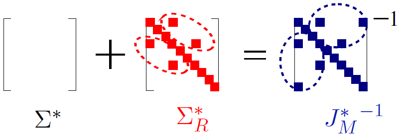

EECS, University of California, Irvine, CA 92697.
We present a fast tensor-based approach for detecting hidden overlapping communities under the Mixed Membership Stochastic Blockmodel (MMSB). We present two implementations, viz., a GPU-based implementation which exploits the parallelism of SIMD architectures and a CPU-based implementation for larger datasets, wherein the GPU memory does not suffice. Our GPU-based implementation involves a careful optimization of storage, data transfer and matrix computations. Our CPU-based implementation involves sparse linear algebraic operations which exploit the data sparsity. We use stochastic gradient descent for multilinear spectral optimization and this allows for flexibility in the tradeoff between node sub-sampling and accuracy of the results. We validate our results on datasets from Facebook, Yelp and DBLP where ground truth is available, using notions of $p$-values and false discovery rates, and obtain high accuracy for membership recovery. We compare our results, both in terms of execution time and accuracy, to the state-of-the-art algorithms such as the variational method, and report many orders of magnitude gain in the execution time. For instance, for the DBLP dataset with about a million nodes and 16 million edges, the execution time is about two minutes.
Fitting high-dimensional data involves a delicate tradeoff between faithful representation and the use of sparse models. Too often, sparsity assumptions on the fitted model are too restrictive to provide a faithful representation of the observed data. In this project, we present a novel framework incorporating sparsity in different domains.
We decompose the observed covariance matrix into a sparse Gaussian Markov model (with a sparse precision matrix) and a sparse independence model (with a sparse covariance matrix). This is shown in the following model. Our framework incorporates sparse covariance and sparse precision estimation as special cases and thus introduces a richer class of high-dimensional models.
We characterize sufficient conditions for identifiability of the two models, viz., Markov and independence models. We propose an efficient decomposition method based on a modification of the popular $\ell_1$-penalized maximum-likelihood estimator ($\ell_1$-MLE). We establish that our estimator is consistent in both the domains, i.e., it successfully recovers the supports of both Markov and independence models, where the number of samples could be much more than the number of variables (high dimensional regime). Our experiments validate these results and also demonstrate that our models have better inference accuracy under simple algorithms such as loopy belief propagation. The proposed algorithm was also applied to the "foreign exchange rate" and "stock market returns" data sets. Detailed results can be found in the following paper.
“High-Dimensional Covariance Decomposition into Sparse Markov
and Independence Domains. ” by M. Janzamin and A. Anandkumar. Preprint, Feb. 2012. An abridged version appears in the Proc. of ICML, June 2012.
Download: PDF. ICML-version. Slides.
Fitting high-dimensional data involves a delicate tradeoff between faithful representation and the use of sparse models. Too often, sparsity assumptions on the fitted model are too restrictive to provide a faithful representation of the observed data. In this project, we present a novel framework incorporating sparsity in different domains.
We consider the problem of high-dimensional Gaussian graphical model selection. We identify a set of graphs for which an efficient estimation algorithm exits, and this algorithm is based on thresholding of empirical conditional covariances. Under a set of transparent conditions, we establish structural consistency (or sparsistency) for the proposed algorithm, when the number of samples $n=\Omega(J_{\min}^{-2} \log p)$, where $p$ is the number of variables and $J_{\min}$ is the minimum (absolute) edge potential of the graphical model. The sufficient conditions for sparsistency are based on the notion of walk-summability of the model and the presence of sparse local vertex separators in the underlying graph. We also derive novel non-asymptotic necessary conditions on the number of samples required for sparsistency.
“High-Dimensional Gaussian Graphical Model Selection: Walk-Summability and Local Separation Criterion” by A. Anandkumar, V.Y.F Tan, F. Huang, and A.S. Willsky. J. Machine Learning Research, 13:2293–2337, Aug. 2012. An abridged version appears in the Proc. of NIPS, Dec. 2011.
Details. Download: PDF. Software code and datasets. Short (NIPS) Version Videolecture NIPS-Slides
We consider the problem of high-dimensional Ising (graphical) model selection. We propose a simple algorithm for structure estimation based on the thresholding of the empirical conditional variation distances. We introduce a novel criterion for tractable graph families, where this method is efficient, based on the presence of sparse local separators between node pairs in the underlying graph. For such graphs, the proposed algorithm has a sample complexity of $n=\Omega(J_{\min}^{-2} \log p)$, where $p$ is the number of variables and $J_{\min}$ is the minimum (absolute) edge potential of the graphical model. We also establish nonasymptotic necessary and sufficient conditions for structure estimation.
“High-Dimensional Structure Learning of Ising Models: Local Separation Criterion” by A. Anandkumar, V.Y.F Tan, F. Huang, and A.S. Willsky. Annals of Statistics, Volume 40, Number 3 (2012), 1346-1375. An abridged version appears in the Proc. of NIPS, Dec. 2011.
Details. Download: PDF. Supplementary file. Software code and datasets. Short (NIPS) Version Videolecture NIPS-Slides
We consider unsupervised estimation of mixtures of discrete graphical models, where the class variable corresponding to the mixture components is hidden and each mixture component over the observed variables can have a potentially different Markov graph structure and parameters. We propose a novel moment-based approach for estimating the mixture components, and our output is a tree-mixture model which serves as a good approximation to the underlying graphical model mixture. Our method is efficient when the union graph, which is the union of the Markov graphs of the mixture components with sparse vertex separators between any pair of observed variables. This includes tree mixtures and mixtures of bounded degree graphs. For such models, we prove that our method correctly recovers the union graph structure and the tree structures corresponding to maximumlikelihood tree approximations of the mixture components. The sample and computational complexities of our method scale as poly$(p, r)$, for an $r$-component mixture of $p$-variate graphical models. Our approach offers a powerful alternative to heuristics such as expectation maximization (EM) for learning mixture models.
“Learning High-Dimensional Mixtures of Graphical Models ” by A. Anandkumar, D. Hsu, F. Huang, and S.M. Kakade. An abridged version appears in NIPS 2012.
Download: PDF. Slides. NIPS-version